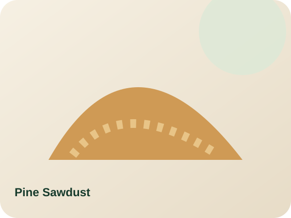

Trociny sosnowe
Trociny sosnowe do ogrzewania domu, handlu i zamówień przemysłowych. Wybierz worki, paletę lub dostawę hurtową. Wilgotność, opakowanie, certyfikacja i transport są potwierdzane w pisemnej ofercie.
Od €150.00
Zobacz produkt